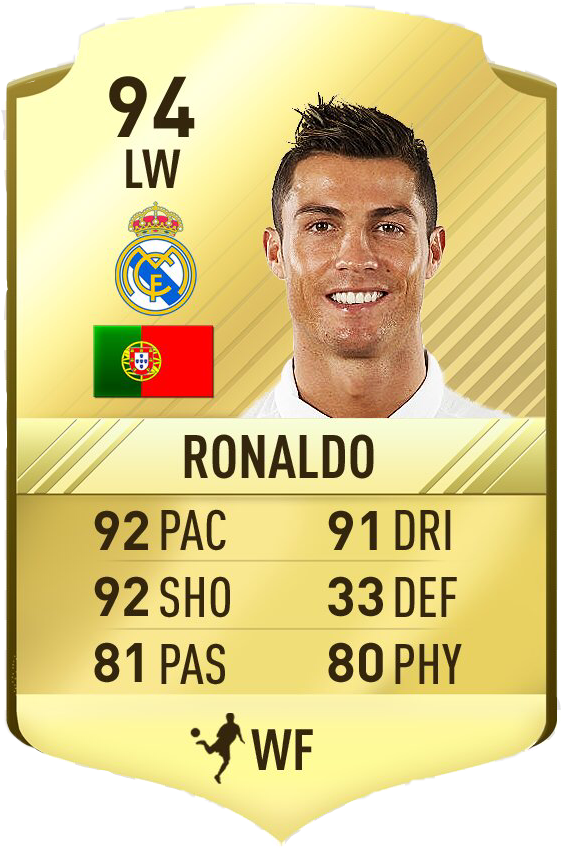

FIFA is een voetbalsimulatiegame die sinds 1993 ieder jaar wordt uitgebracht door EA (Electronic Arts). De speler moet een club of land managen en bestuurt de voetbalspelers van het team tijdens een wedstrijd. Je kunt het spel in je eentje spelen, maar ook in multiplayermodus én online tegen anderen. Ieder jaar verschijnt er een nieuwe editie van FIFA met updates van spelers, ploegen en competities. Naast de jaarlijkse uitgaves produceert men tijdens grote toernooien, zoals het EK of WK, aparte edities. Ook zijn er enkele straatvoetbaledities, waarvan de laatste versie in 2012 is uitgebracht. FIFA is te spelen op verschillende spelcomputersystemen, waaronder Playstation en Xbox. n het begin kies je welke club of land je gaat managen. Als manager bepaal je de tactiek van het team, welke spelers spelen, hoe er getraind wordt, welke spelers gekocht of geselecteerd worden… Kortom: jij bepaalt alles. Je houdt de financiën van je team bij en bepaalt wie er in jouw technische staf zit. Je praat met de media en probeert jouw spelers gemotiveerd te houden.
FIFA probeert zo veel mogelijk te lijken op de realiteit. Dat betekent dat iedere club, land en individuele speler kwaliteiten zijn toegedicht die in verhouding zijn met hoe het er in de werkelijkheid aan toegaat. Zo is het team van Roda JC slechter dan dat van Feyenoord en zijn de spelers van Barcelona op vele vlakken beter dan de spelers van Real Betis. De ranking van de teams is afhankelijk van de aanvallende en verdedigende kwaliteiten van de spelers.
Spelers zijn beoordeeld op snelheid, schotkracht, passing, dribbels, defensieve kwaliteiten en fysieke kracht. Dit bij elkaar zorgt voor een score waaraan je verdedigers, middenvelders en aanvallers kan rangschikken. Zo is bijvoorbeeld in FIFA 17 Cristiano Ronaldo (Real Madrid) de beste aanvaller met een score van 94. Keepers zijn beoordeeld op duiken, balbehandeling, schotkracht, reflexen, snelheid en positionering, waarbij Manuel Neuer (Bayern München) in FIFA 17 de beste is met een score van 92.
Hoe beter de spelers, hoe gemakkelijker je wedstrijden kan winnen. Je kan als manager kiezen voor een verdedigende 5-4-1 tactiek, waarbij je countert en gokt op de snelheid van jouw aanvallers, maar ook voor een dominante 4-3-3 opstelling met snelle tiktakvoetbal. Hoewel de kwaliteiten van de spelers belangrijk zijn, blijven je eigen gaming-vaardigheden het meest cruciaal. Je bestuurt je eigen team tijdens een wedstrijd en kan wissels doorvoeren gedurende de match. Een wedstrijd kan verschillende lengtes hebben (van zes minuten per helft tot de werkelijke 45 minuten). Doel van het spel is wedstrijden winnen, zoveel mogelijk punten behalen en prijzen pakken. FIFA kan je met meerdere mensen spelen. Je kan in je eentje tegen de computer spelen, maar ook één-tegen-één of met nog meer mensen (dit ligt aan het aantal spelconsoles).